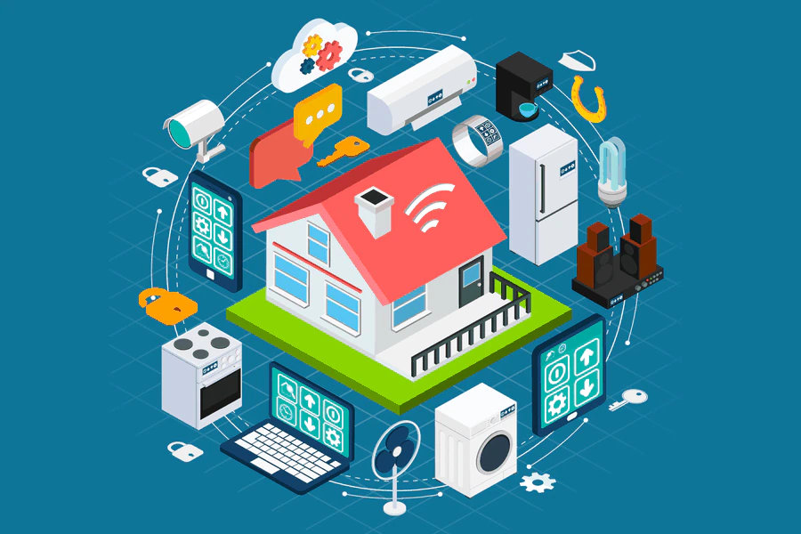

Introducción a IoT
Historia
El término "Internet de las cosas" (IoT) fue utilizado por primera vez en 1999 por el pionero tecnológico británico Kevin Ashton para describir un sistema en el que los objetos del mundo físico podían conectarse a Internet mediante sensores. Ashton acuñó el término para ilustrar el poder de conectar etiquetas de identificación por radiofrecuencia (RFID) utilizadas en cadenas de suministro corporativas a Internet para contar y rastrear mercancías sin necesidad de intervención humana.
Si bien el término "Internet de las cosas" es relativamente nuevo, el concepto de combinar computadoras y redes para los dispositivos de monitoreo y control han existido durante décadas. A fines de la década de 1970, por ejemplo, los sistemas para el monitoreo remoto de medidores en la red eléctrica a través de líneas telefónicas ya estaban en uso comercial. En la década de 1990, los avances en la tecnología inalámbrica permitieron que se generalizaran las soluciones empresariales e industriales "máquina a máquina" (M2M) para el monitoreo y la operación de equipos. Muchos de estos primeros soluciones M2M se basaron en redes cerradas especialmente diseñadas y patentadas o específicas de la industria, en lugar de redes basadas en el Protocolo de Internet (IP) y estándares de Internet.
Usar IP para conectar dispositivos que no sean computadoras a Internet no es una idea nueva. El primer “dispositivo” de Internet, una tostadora habilitada para IP que podía encenderse y apagarse a través de Internet, se presentó en una conferencia de Internet en 1990. Durante los años siguientes, otras “cosas” fueron habilitadas para IP, incluido una maquina de refrescos en la Universidad Carnegie Mellon en los EE. UU. y una cafetera en la Trojan Room de la Universidad de Cambridge en el Reino Unido (que permaneció conectada a Internet hasta 2001). A partir de estos comienzos caprichosos, un sólido campo de investigación y desarrollo en "redes de objetos inteligentes" ayudó a crear la base para el Internet de las cosas de hoy.
Definición
IoT (Internet of things/Internet de las cosas) es una arquitectura emergente basada en la Internet global que facilita el intercambio de bienes y servicios entre redes de la cadena de suministro y que tiene un impacto importante en la seguridad y privacidad de los actores involucrados.
Iot como evolucion del Interntet
Internet puede ser también una plataforma para dispositivos que se comunican electrónicamente y comparten información y datos específicos con el mundo que les rodea. Así, la IoT puede verse como una verdadera evolución de lo que conocemos como Internet añadiendo una interconectividad más extensa, una mejor percepción de la información y servicios inteligentes más completos. En su mayor parte, se utilizó la Internet para protocolos orientados a la conexión de aplicaciones como HTTP (Protocolo de transferencia de hipertexto) y SMTP (Simple Mail Transfer Protocol). Sin embargo, hoy en día un gran número de dispositivos inteligentes se comunican entre ellos y con otros sistemas de control.
Por comparación, Internet ha seguido una ruta sostenida de desarrollo y mejora, pero podría decirse que no ha cambiado mucho. Básicamente sigue conservando el propósito para el que fue diseñada durante la era de ARPANET. Por ejemplo, en los comienzos había varios protocolos de comunicación como AppleTalk, Token Ring e IP. En la actualidad, Internet está estandarizada en gran medida en IP.
En este contexto, IoT adquiere gran importancia porque se trata de la primera evolución real de Internet (un salto que conducirá a aplicaciones revolucionarias con el potencial de mejorar drásticamente la manera en que las personas viven, aprenden, trabajan y se entretienen). IoT ya ha logrado que Internet sea sensorial (temperatura, presión, vibración, luz, humedad, estrés), lo que nos permite ser más proactivos y menos reactivos.